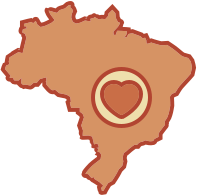

Registre
Descreva o que está acontecendo, informe o local e, quando possível, envie uma foto.

Acompanhe alertas climáticos, identifique áreas de risco e contribua para uma cidade melhor. Com tecnologia e participação cidadã, trabalhamos para prevenir enchentes e melhorar a infraestrutura urbana.
Uma cidade mais preparada é construída com informação, tecnologia e colaboração.
O EcoCity Guardian é um projeto desenvolvido para a FIAP Global Solution 2026/2, com o propósito de utilizar tecnologia e inteligência artificial para contribuir com cidades mais seguras, sustentáveis e resilientes.
A plataforma conecta monitoramento urbano, análise de dados e participação cidadã. Moradores podem registrar problemas; a triagem automatizada ajuda a organizar as ocorrências por tipo e prioridade, apoiando a tomada de decisão dos gestores.
Um fluxo simples para aproximar moradores e gestão pública.
Descreva o que está acontecendo, informe o local e, quando possível, envie uma foto.
A API executa uma triagem inicial e retorna categoria, prioridade e justificativa.
Consulte o status demonstrativo dos alertas e o andamento dos relatos enviados.
O gestor revisa os relatos, atualiza os status e organiza o atendimento.
Informações locais ajudam a reconhecer problemas antes que eles se agravem.
Acúmulo de água, ruas alagadas, enxurradas e pontos de transbordamento.
Bueiros obstruídos, bocas de lobo danificadas e descarte irregular de resíduos.
Deslizamentos, buracos, árvores caídas, iluminação e demandas gerais de zeladoria.
Um relato com local e contexto pode ajudar a equipe a compreender melhor um problema urbano.